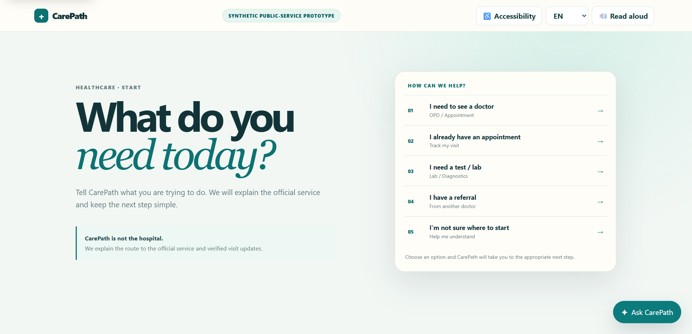
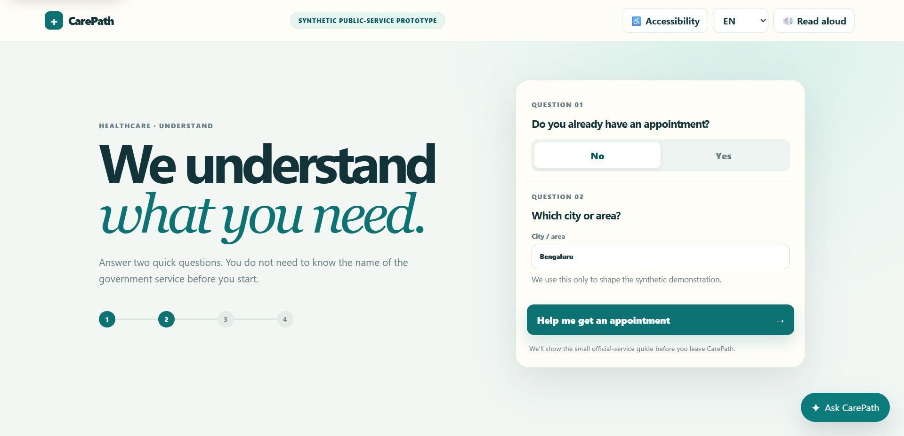
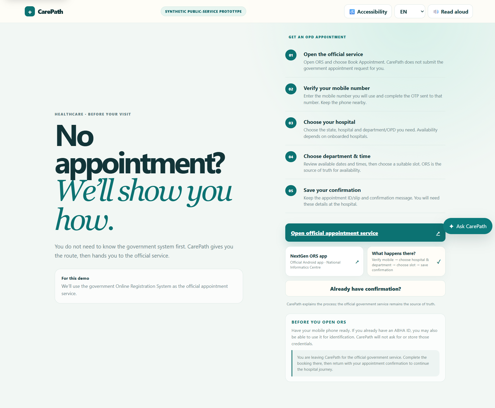
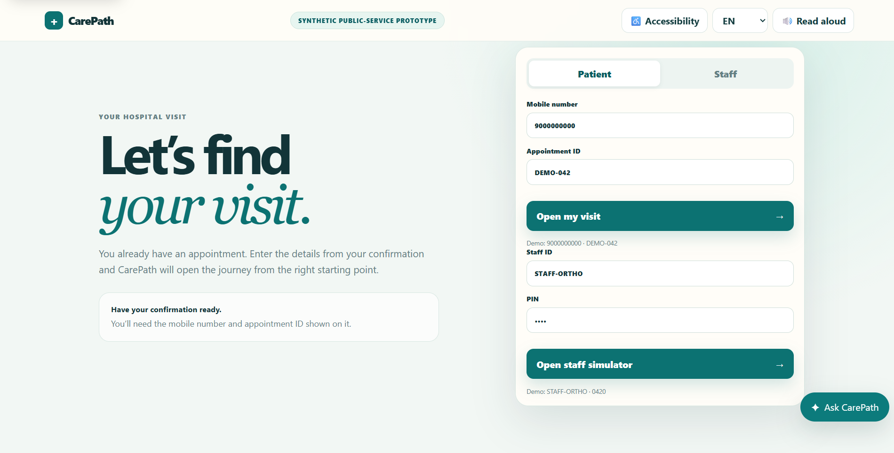
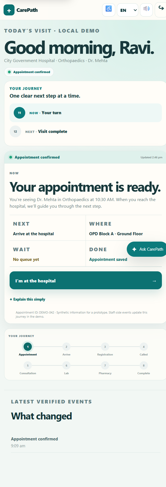
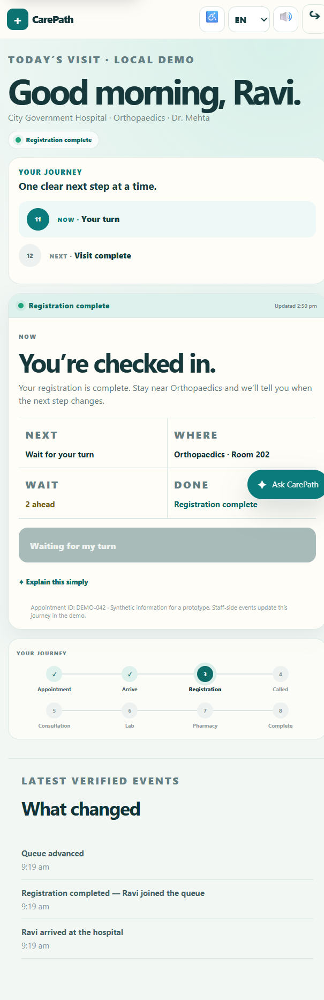
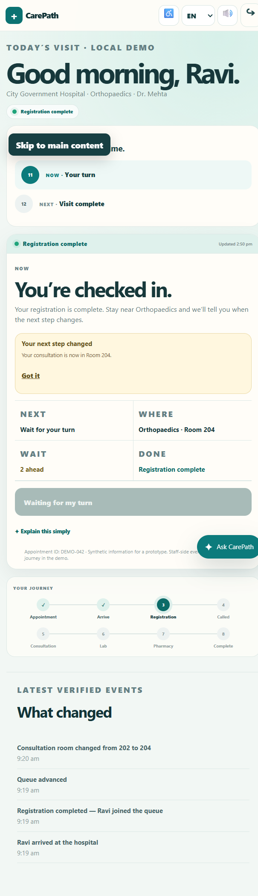
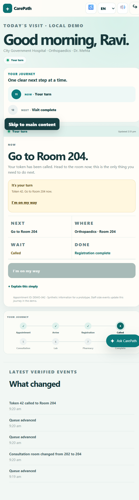
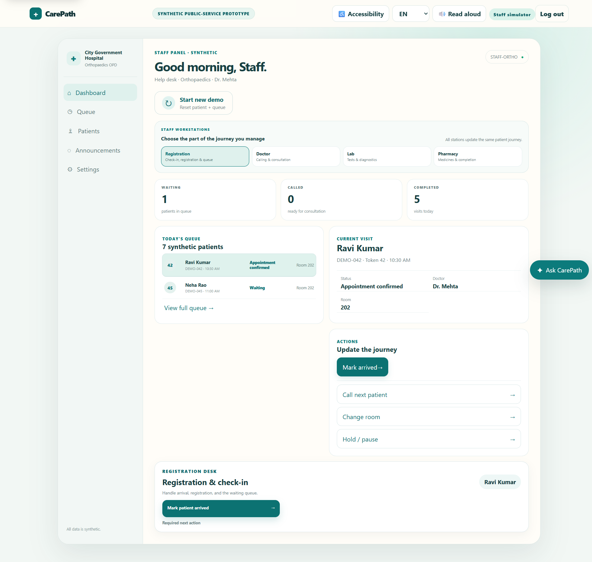
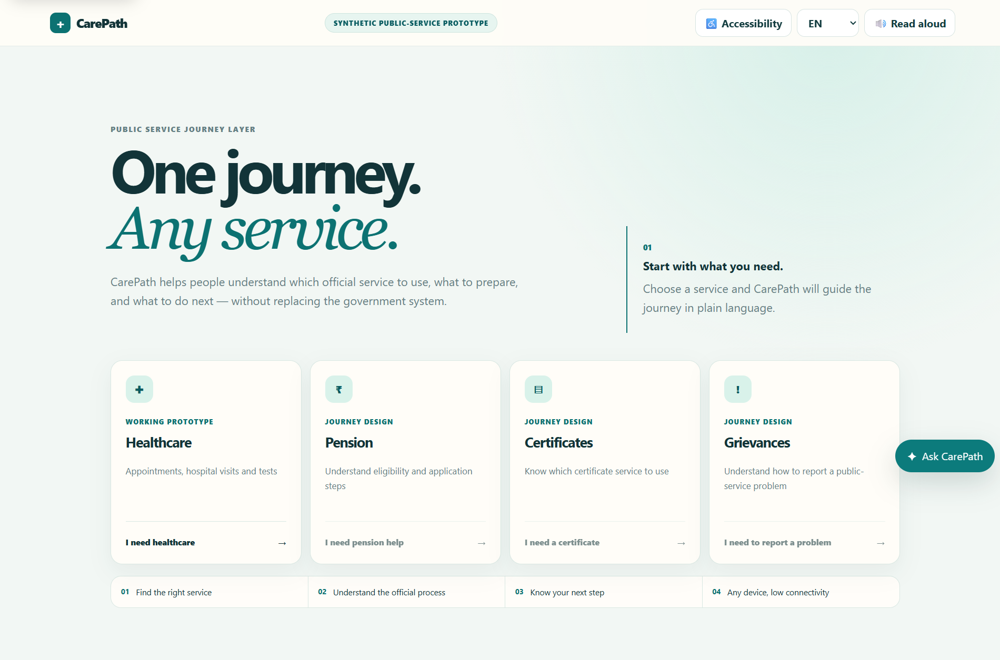

One journey.
Any service.
CarePath is a synthetic public-service prototype that helps people understand complicated healthcare journeys, know what to do next, and stay oriented as the visit changes — without replacing the official government service.
Open working prototype ↗People shouldn't need to understand the system before the system helps them.
Public-service journeys often span unfamiliar terminology, different offices, forms, queues and uncertain handoffs. The interface problem is not just finding information — it is knowing what to do next.
People can arrive at the wrong place or without the right information.
Confirmation screens often tell you what you booked, not what you should do now.
When a queue or room changes, the user has to ask someone to verify the new state.
The official service can be correct and still be difficult to navigate without context.
Build the journey before polishing the interface.
I treated the prototype as a service loop rather than a collection of screens: intent → explanation → official handoff → visit → live updates → completion.
Frame the service problem
Mapped moments where people need an answer, a decision or a next action.
Define the shared journey model
Created one state model that could drive both patient and staff experiences.
Prototype the healthcare route
Started with appointment, arrival, registration, queue, consultation and completion.
Wire the staff side
Added operational workstations so patient updates had a clear source of truth.
Design uncertainty and accessibility states
Made current state, next state, room changes and support controls explicit.
Test the whole loop
Ran the journey end to end and checked restart, back, language and official handoffs.
From “what do I need?” to “I know what happens next.”
The interface progressively reduces uncertainty instead of presenting the whole healthcare system at once.
Start with intent, not government terminology.
CarePath begins with a plain-language question: what are you trying to do today? The user can choose a healthcare need without knowing which official service owns it.

Ask only what changes the route.
Two small questions establish whether the person already has an appointment and where they are located. This keeps the interaction focused while giving the system enough context to guide the next step.

Explain the official process before asking the user to leave.
For a new appointment, CarePath explains the official service in plain language, makes the handoff explicit, and tells the user what to bring back.

Reconnect the user to the right state.
Once a confirmation exists, the user can return with the mobile number and appointment ID. CarePath opens the journey from the correct starting point instead of making the person repeat the process.

Turn a confirmation into an ongoing journey.
The visit tracker always separates now, next, where, wait, and done. That structure stays useful even as the underlying state changes.



When the system changes, the interface changes with it.
The called state turns a vague notification into one decisive instruction: go to the room now. The user does not have to interpret a queue or reconstruct what changed.

The patient interface is only half the product.
A live journey needs a source of truth. The staff simulator gives operational events a place to originate, while the patient view translates those events into a simple next step.
That shared state model is what lets a room change become a meaningful patient update instead of a disconnected screen.

One journey model can extend beyond healthcare.
The healthcare route is the working prototype, but the architecture is intentionally broader: the same pattern can help people navigate pensions, certificates, grievances and other public services.
The design principle is consistent: start with intent, explain the official route, hand off cleanly, and keep the next step visible.

The strongest design decision was not a component. It was the model.
Building the interaction architecture alongside the visual design made the multi-state journey possible without the interface losing its meaning. The work reinforced a simple rule I now carry forward: map the state and the handoff before polishing the screen.
Accessibility changed how I thought about the journey. Supporting multiple languages, keypad-phone contexts, low-connectivity states, and assisted access meant designing for different constraints from the beginning rather than adding accessibility at the end.
One shared journey model gave the patient and staff experiences a common source of truth.
Designing interaction architecture early makes complex flows easier to scale, test and explain.